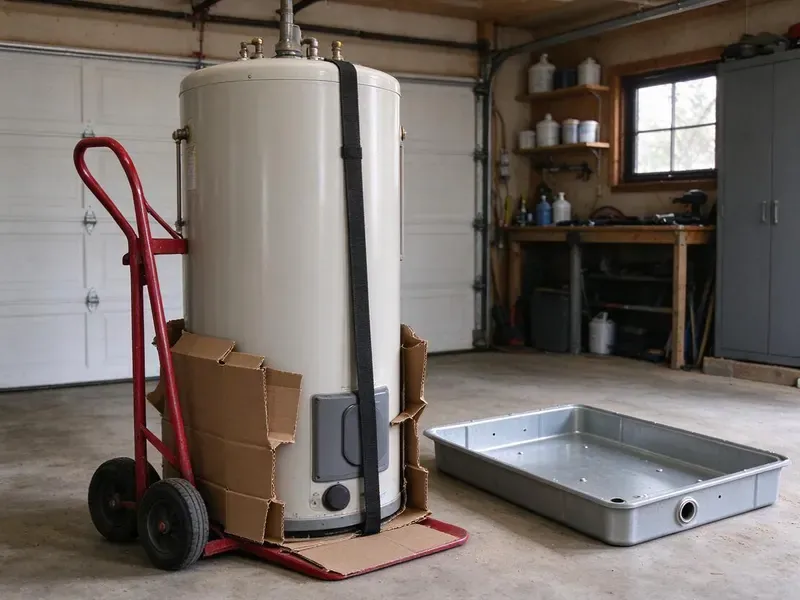

Sump Pump Installation in Montpelier, VT
When you need a new sump pump installed in Montpelier, VT, CKV Plumbing provides reliable service to safeguard your home's foundation.
- Prompt, Local Service
- Quick Storm Season Scheduling
- Local Montpelier Service
- Fast, Reliable Installation
Need a New Sump Pump Installed in Montpelier, VT?
Our team is ready to provide reliable sump pump solutions for your Montpelier property.
Sump Pump Installation and Storm Water Protection in Montpelier, VT
CKV Plumbing sizes each sump pump based on pit volume, lift height and expected inflow. We install a check valve, a properly routed discharge line and backup options so the system works when it matters most.
Our expertise includes:
- New sump pit excavation through slab, hardpan and rock
- Clean wiring and plumbing for reliable performance.
- Installation of primary and battery back-up systems.

Additional Plumbing Installation Services in Montpelier, VT
We install water heaters, pumps, lines, and fixtures across Montpelier, VT with careful, permitted work that passes inspection the first time.


Customers
Why Choose CKV Plumbing for Sump Pump Installation in Montpelier, VT?
We install pumps with the right horsepower, discharge size and backup protection. That means fewer failures, less noise and better protection during storms.
- Local Expertise, We understand the local soil conditions and water tables in Montpelier, which directly impact sump pump effectiveness.
- Local Knowledge, We understand Vermont soil conditions and water table levels, which are key for effective sump pump placement and sizing.
- Proper Discharge, We route discharge lines away from the foundation and your neighbors.
Citywide Coverage
CKV Plumbing works in every neighborhood in Montpelier and the surrounding areas for all sump pump installation needs. We are familiar with the many housing styles and common basement issues found throughout the area.
Experienced Team
Our team of licensed plumbers has broad experience with sump pump installation in Vermont. They are trained on the latest techniques and equip themselves with the right tools to handle any basement or crawl space configuration.
Safety-First Approach
We take every precaution during sump pump installation to protect your home and our team. Our process includes careful inspections and adherence to all local plumbing and electrical codes, giving you peace of mind.
Trusted Certified Montpelier Plumbing Services Professionals
At CKV Plumbing, we take pride in providing licensed, certified plumbing services throughout Montpelier, VT. Backed by leading industry credentials, our experienced plumbers combine technical skill with genuine customer care. Whether it is repair, installation, or maintenance, we follow strict safety and quality standards to deliver lasting results you can trust.
Call Us Now PHCC Plumbing Contractor Recognition
PHCC Plumbing Contractor Recognition Better Business Bureau (BBB) Accreditation
Better Business Bureau (BBB) Accreditation Angi Certified Pro
Angi Certified Pro ISO 9001 Quality Management Certification
ISO 9001 Quality Management CertificationReliable Sump Pump Installation Services in Montpelier, VT
High Water Alarms and Smart Monitoring in Montpelier
A high water alarm lets you know when water rises above normal levels. Smart monitors can send alerts to your phone when the pump runs or fails. We install alarms and Wi-Fi monitors on new and existing pumps. These devices are especially useful for vacation homes and rental properties. Early warnings can prevent serious water damage.

Primary Sump Pump Installation in Montpelier
A primary sump pump is your first defense against basement flooding. We install robust, electrically powered pumps designed to automatically activate when water levels rise in the sump pit. Our plumbers will assess your basement's water intrusion risks, considering local water tables and soil types in Montpelier, to recommend the optimal pump size and horsepower for effective water removal.
Emergency Sump Pump Replacement in Montpelier, VT
If your existing sump pump fails during a storm, you need fast help. CKV Plumbing offers emergency sump pump replacement services across Montpelier, VT. We can promptly diagnose the issue, remove the old unit and install a new, reliable sump pump to prevent immediate flooding and shield your property from further water damage.
Zoeller Sump Pump Installation in Montpelier, VT
Zoeller is a trusted brand known for its durable and reliable sump pumps. CKV Plumbing frequently installs Zoeller primary, backup and combination systems, offering several models to fit different needs and budgets. Our plumbers are familiar with Zoeller's product line and can help you select the best model for your Montpelier, VT home, ensuring a long-lasting flood protection solution.
Exterior Drainage and Yard Sump Pumps in Montpelier
Some homes collect water in sunken patios, below-grade driveways or window wells rather than a basement. We install exterior sump basins with pumps that move storm water to a safe discharge point. These systems are useful for lots that slope toward the house. We route discharge lines so water drains away from the foundation and neighbors. This helps prevent siding damage and foundation problems.
Battery Backup Sump Pump Systems in Montpelier, VT
Severe storms can knock out power right when your pump is needed most. Battery backup pumps take over automatically when the main pump fails or power goes out. We install backup systems with sealed batteries and charging units. Many include alarms that alert you to problems. Backups add an extra layer of protection for finished basements.
Sump Pump Replacement in Montpelier, VT
Sump pumps often sit idle for long stretches between storms, which can lead to stuck floats and seized motors. We replace old pumps with new models and inspect the pit, check valve and discharge line. Upgrading to a higher capacity pump may help if your old one could not keep up. We test the new pump by filling the pit with water. Replacement before the rainy season is a smart move.

Commercial Sump Pump Solutions in Montpelier
Businesses in Montpelier also face the risk of water damage from heavy rains or burst pipes. CKV Plumbing provides commercial-grade sump pump installation services designed for larger volumes and more demanding environments. We can install heavy-duty systems for basements, elevator pits or other areas prone to flooding in commercial properties, protecting your assets and operations.
Sump Pump Installation Near Me in Montpelier, VT
Our commitment to the Montpelier, VT community means we're always ready to respond quickly to your sump pump needs. We pride ourselves on being the trusted local experts, offering tailored solutions that protect your home from groundwater issues. Count on us for professional, convenient service.
When you search for 'sump pump installation near me' in Montpelier, VT, CKV Plumbing is your local, trusted choice. Our team is positioned to provide rapid response and expert service throughout the area.
CKV Plumbing at a Glance
- Fully licensed plumbing team covering Montpelier, VT
- 24/7 emergency service with same-day scheduling
- Clear written estimates, no hidden fees
- 4.8-star rated by 553+ Vermont customers
Montpelier Map
Montpelier Information
- Population
- 7,991
- Area codes
- Local
- Service area
- Montpelier and communities within 40 miles
- Nearby
- Barre, St. Johnsbury, Essex Junction, South Burlington
A reliable sump pump is essential for homes in Montpelier, VT that see heavy rain, high groundwater or slow-draining soil, all of which increase the risk of foundation damage and basement flooding.
Expert Services
Trust our professionals for reliable CKV Plumbing solutions in Montpelier, VT.
Our Specialized Plumbing Services in Montpelier, VT
At CKV Plumbing, we provide a complete range of plumbing services across Montpelier, VT. From leak detection to full system installations, our team ensures fast, precise, and affordable service for both residential and commercial properties. Explore our core services below:


How Our Sump Pump Installation Process Works in Montpelier, VT
Our sump pump installation process focuses on reliable protection and a clean job site.
Request a Quote
Contact CKV Plumbing by calling (802) 209-5139 to schedule an on-site assessment. We'll discuss your needs and provide a detailed, no-obligation estimate for your sump pump installation.
Site Assessment
Our expert plumber will visit your Montpelier home to evaluate your basement or crawl space, determining the best sump pump type and location for effective water management.
Professional Installation
We will carefully install your new sump pump, including excavating the pit, connecting the discharge line and ensuring all electrical work meets Vermont code requirements.
Frequently Asked Questions About Sump Pump Installation in Montpelier
Replacing a pump in an existing pit typically costs $600 to $1,500. Installing a new pit with slab cutting and excavation often runs $1,500 to $4,000. Battery backups typically add $500 to $1,500.
Most standard sump pump installations can be completed within 3 to 6 hours. However, if a new sump pit needs to be excavated, or if complex plumbing and electrical work is required, the process might take a full day. We always aim for efficient service with little disruption to your Montpelier home.
Most standard sump pump installations can be completed within 3 to 5 hours. However, if a new sump pit needs to be excavated or if there are extensive plumbing or electrical adjustments, the process might take a full day. We always aim for efficiency without compromising quality.
In many cities, a plumbing permit is usually required for new sump pump installations or major replacements. This ensures the work meets local building and plumbing codes. CKV Plumbing handles all necessary permitting in Montpelier, VT to make sure your installation is fully compliant.
A simple replacement often does not need a permit. New pits, electrical work or discharge connections may require one, and we will let you know.
To keep your new sump pump running efficiently, test it monthly by pouring water into the pit to confirm it activates. Annually, inspect the discharge pipe for obstructions, clean the pit and check the float switch. Regular professional maintenance from CKV Plumbing can extend its lifespan in your Montpelier home.
Yes, CKV Plumbing stands behind our work. We offer warranties on both the sump pump equipment we install and our labor. Specific warranty details vary by pump manufacturer and installation type, which we will explain with you before starting any work in Montpelier, VT.
Water should discharge away from the foundation to a safe area on your property. Many cities do not allow sump discharge into the sanitary sewer.
What People Are Saying About Our Plumbing Experts?

Sofia M.
Two new toilets installed in one visit, no mess left behind, and the tech even adjusted a faucet he noticed was dripping. Fair pricing and really friendly.
Toilet Installation · Shelburne, VT
Daniel K.
A pipe burst at 11 pm and they actually answered. The plumber showed up within the hour, shut everything down, and had us back to normal the next morning. Could not ask for more.
Emergency Plumbing · Barre, VT
James P.
Our commercial plumbing system had a leak under the sink, and CKV Plumbing handled it professionally. The plumbers arrived quickly and restored everything without disruption to our customers.
Commercial Plumbing · St. Johnsbury, VTLaura S.
I scheduled a water heater replacement, and the team made the process smooth and affordable. The new unit works perfectly, and they cleaned up after completing the job.
Water Heater Replacement · Shelburne, VT
Mark T.
When our office needed drain cleaning, CKV Plumbing provided quick, reliable service. The plumber arrived on time and made sure every drain flowed perfectly before leaving. Very satisfied.
Drain Cleaning · Middlebury, VTRobert G.
The trenchless sewer replacement saved our front yard. They walked us through the camera inspection footage first so we knew exactly what we were paying for.
Sewer Line Replacement · Middlebury, VT